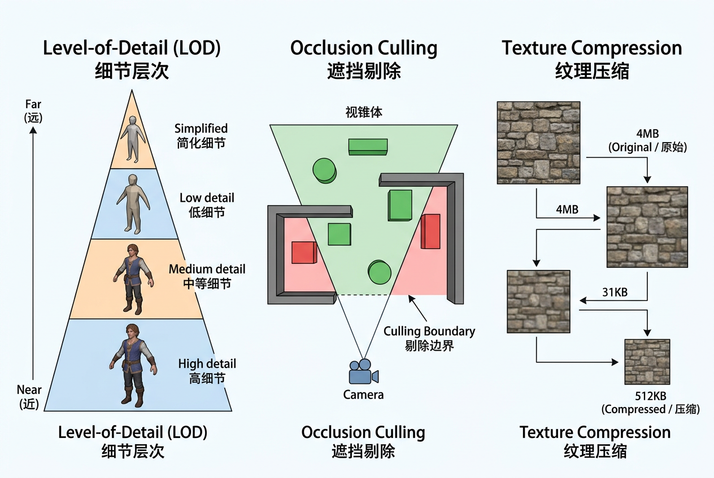

本讲义基于 Steve Marschner & Peter Shirley 所著《虎书》（Fundamentals of Computer Graphics）第5版第22章（p.641-659）游戏中的计算机图形学。
实时渲染的工程现实——平台差异（PC/主机/移动/Web）、视锥剔除/遮挡查询/Hi-Z LOD、纹理压缩格式（BC/ETC2/ASTC）、游戏类型的技术侧重。
本版插画采用 Guizang 材质插画风格重新绘制。
在过去，游戏通常只为一个平台设计。跨平台游戏开发（Multiplatform Game Development）随着开发成本的上升已成为常态。支持多个平台带来的开发成本增量，远不及潜在用户基数翻倍甚至三倍所带来的收益。
有些平台的定义相当松散。例如，为 Windows PC 平台开发游戏时，开发者必须考虑极其多样化的硬件配置。游戏甚至被期望能在开发时还不存在的 PC 配置上良好运行——这之所以可能，完全归功于 Windows 平台 API 所提供的抽象层。
开发者应对图形性能差异的一种方法是缩放（Scaling）——根据系统能力调整图形质量。这可以确保低端系统上的可玩性，同时在高性能系统上实现有竞争力的视觉效果。这种调整有时通过自动性能分析完成，但更常见的是将控制权交给用户，让他们根据自己对质量与速度的偏好做出判断。显示分辨率最容易调整，其次是抗锯齿质量。此外，为阴影、运动模糊等视觉效果提供多个质量档位（包括完全关闭）也相当普遍。

想一想：为什么PC游戏的画面设置里，分辨率滑块总在最前面？如果让你设计一个自动画质调节系统，你会优先检测哪些硬件指标？
图形性能差异可能大到某些机器即使在最低画质设置下也无法以可玩帧率运行游戏；因此，PC 游戏开发者会为每款游戏公布最低和推荐配置。
与 PC 相反，游戏主机（Game Console）是严格定义的平台。当为任天堂 Wii 等主机开发游戏时，开发者确切地知道游戏将在什么硬件上运行。如果主机的硬件实现发生变化（通常是为了降低制造成本），主机制造商必须确保新实现与旧实现行为完全一致，包括时序和性能。这并不意味着主机开发者的工作轻松——主机 API 往往更接近底层硬件，抽象程度较低，这带来了独特的困难。从某种意义上说，跨平台开发（通常至少包含两种不同的主机平台，往往还有 Windows）是其中最难的，因为跨平台开发者既没有固定平台的保障，也没有单一高级 API 的便利。
生活类比：主机平台好比赛车——每辆赛车规格完全一致，工程师可以针对固定参数做极端优化。PC平台则像越野拉力赛——车子可能从家庭轿车到改装越野车不等，必须设计自适应系统来应对千差万别的路况。
现代游戏平台可粗略分为四类，每类GPU架构有着根本性的设计差异。理解这些差异是跨平台图形开发的基础。
| 特性 | PC 离散GPU | 主机 共享内存 | 移动 Tile-based | Web (WebGL/WebGPU) |
|---|---|---|---|---|
| 内存架构 | 独立VRAM 4-24GB + 独立系统RAM | 统一内存 8-16GB CPU/GPU共享 | 统一内存 2-8GB CPU/GPU共享 | 受浏览器沙箱限制 通常≤2GB可用 |
| 计算能力 | 10-80+ TFLOPS | 4-12 TFLOPS | 0.5-4 TFLOPS | 取决于宿主硬件 |
| 渲染架构 | 立即模式渲染 大容量显存带宽 | 统一着色器架构 与PC GPU同源 | Tile-Based延迟渲染 片上Tile缓冲 | 通过ANGLE等翻译层 间接访问底层API |
| 带宽 | 300-1000+ GB/s | 200-560 GB/s | 30-80 GB/s | 受浏览器进程间通信限制 |
| 关键约束 | 硬件片段化 需多级画质缩放 | 固定硬件，可极限优化 内存CPU/GPU竞争 | 功耗/热严格限制 带宽极度受限 | 无原生API访问 着色器功能受限 |
| 典型API | DirectX 12, Vulkan | 平台专有低级API （如GNM/GNMX, GRX） | Vulkan Mobile, Metal | WebGL 2.0, WebGPU |
| 渲染目标 | 1080p-4K, 60-360fps | 1080p-4K （动态分辨率）, 30-60fps | 720p-1080p, 30-60fps 可变速率着色 | 720p-1080p, 30-60fps |
移动GPU（如ARM Mali、Qualcomm Adreno、Apple GPU、Imagination PowerVR）广泛采用分块延迟渲染（Tile-Based Deferred Rendering, TBDR）架构。与PC GPU的"立即模式"（Immediate Mode）将整个帧缓冲视为一个整体不同，TBDR将屏幕划分为多个小方块（tile，通常16×16或32×32像素），每个tile独立完成全部渲染管线段后再输出到帧缓冲：
工程师笔记：TBDR的核心优势在于将"带宽黑洞"——像素着色过程中的反复帧缓冲读写——限制在极快的片上SRAM中。这使移动GPU在带宽仅为PC GPU 1/10甚至更低的情况下仍能实现可观的图形效果。代价是：(1) 顶点处理后的几何数据必须暂存，需要额外的中间缓冲；(2) 对渲染状态的频繁切换敏感（因为每个tile都要重放状态变更）；(3) 某些PC端常用的后期处理技巧（如在像素着色器中读回当前帧缓冲值）在TBDR上代价极高。
想一想：为什么在移动端Tile-Based GPU上反复切换渲染状态（如频繁更换shader或纹理）比PC端代价更大？这与Binning/分块阶段有什么关联？
选择正确的图形API是跨平台开发的核心技术决策。下表总结了当前主流API的适用场景和关键特性：
| API | 平台 | 抽象层次 | 多线程支持 | 着色器语言 | 适用场景 |
|---|---|---|---|---|---|
| DirectX 12 | Windows, Xbox | 低（显式资源管理） | 原生 命令列表+队列 | HLSL (DXBC/DXIL) | PC 3A大作、Xbox独占 |
| Vulkan | Windows, Linux, Android, Switch | 低（显式GPU控制） | 原生多线程命令缓冲 | SPIR-V （GLSL/HLSL可编译） | 跨平台3A、模拟器、 需要极致性能的场景 |
| Metal | macOS, iOS, iPadOS, tvOS | 中低 | 命令编码器多线程 | Metal Shading Language （C++14子集） | Apple生态独占游戏、 专业应用 |
| OpenGL / ES | 全平台（渐趋淘汰） | 高（驱动隐藏细节） | 有限（单线程为主） | GLSL | 遗留项目维护、 简单2D游戏 |
| WebGPU | 浏览器（Chrome, Edge, Firefox） | 中（类Vulkan设计） | 命令编码器 | WGSL （或SPIR-V） | 浏览器内3D游戏、 Web端可视化 |
| WebGL 2.0 | 浏览器（全平台） | 高（OpenGL ES 3.0超集） | 无原生多线程 | GLSL ES 3.0 | Web端3D内容、 轻量级游戏 |
选型实战：如果你的项目同时发布到Windows PC和PlayStation 5，理论上可以用Vulkan（PC）+ 专有API（PS5），但维护两套渲染后端成本极高。工业界的主流方案是：(1) 使用商业引擎（Unreal/Unity）由引擎团队处理多后端；(2) 自研引擎时只维护DX12 + 一个低级主机API，共享大部分中间层代码；(3) 通过中间IR（如SPIR-V）在API之间共享着色器逻辑。
现代游戏主机（PlayStation 5、Xbox Series X|S、Nintendo Switch）全部采用统一内存架构（Unified Memory Architecture, UMA）：CPU和GPU共享同一块物理内存。
这种设计的优势在于：
但统一内存也带来特有的挑战：
实际案例：PS4的8GB GDDR5统一内存在2013年发布时非常慷慨。但到了2020年，《最后生还者 第二部》几乎用满了每一MB——开发团队不得不设计复杂的资产流式系统，确保距离玩家50米以外的纹理能及时降级腾出空间给眼前的英雄角色。
基于浏览器的虚拟机平台（Browser-based Virtual Machine），如 Adobe Flash，是一类有趣的游戏平台。尽管这类虚拟机运行在从个人电脑到手机的广泛硬件上，虚拟机提供的高度抽象带来了稳定且统一的开发平台。相对容易的开发门槛和庞大的潜在用户群，使它们对游戏开发者越来越有吸引力。然而，这些平台受限于所支持硬件的最低共同标准，且虚拟机在任何给定平台上的性能都低于原生代码。因此，这类平台最适合图形需求适中的游戏。
平台还可以按开发开放程度来划分，这是一个商业或法律上的区分，而非技术上的。例如，Windows 在开发工具广泛可用且没有看门人控制游戏市场的意义上是"开放"的。苹果 iPhone 是一个相对受限的平台——所有应用需要通过认证流程，某些类别的应用被直接禁止。游戏主机是最受限制的游戏平台，开发工具的获取受到严格控制。不过，随着在线主机游戏市场的引入（通常更开放），这一情况有所松动。一个特别有趣的例子是微软的 Xbox LIVE 社区游戏服务，开发工具可免费获取，而"看门"功能主要由同行评审完成。通过该服务分发的游戏出于安全原因必须使用微软提供的虚拟机平台。
想一想：为什么主机平台要严格控制开发工具的分发？这种封闭性对游戏开发者和玩家各有什么利弊？
游戏平台决定了游戏体验的许多元素。例如，PC 游戏玩家使用键盘和鼠标，而主机游戏玩家使用专用游戏手柄。许多主机游戏支持同一台主机上的多人游戏，要么共享屏幕，要么为每个玩家提供窗口。由于共享键盘和鼠标的困难，这种玩法在 PC 上不存在。手持游戏系统与触摸屏手机又各有不同的操控方案。
尽管游戏平台差异很大，一些共同趋势仍然可以识别。大多数平台拥有多个处理核心，分为通用核心（CPU）和图形专用核心（GPU）。性能的增长主要来自核心数量的增加，单核心性能的提升相对有限。随着 GPU 核心通用性的增强，GPU 与 CPU 核心之间的界限越来越模糊。存储容量的增速通常低于处理能力，而通信带宽（核心之间以及核心与存储之间）的增长速度更慢。
游戏图形的主要挑战之一是管理多个有限资源池。每个平台对处理时间、存储空间和内存带宽等硬件资源施加各自的约束。在更高层面，开发资源（Development Resources）也需要管理——有一个固定规模的程序员、美术师和游戏设计师团队，在有限的期限内完成游戏（希望不用加太多班！）。在决定采用哪些图形技术时，必须考虑这一点。
在深入每个资源类型之前，先从鸟瞰视角理解游戏图形面临的四大约束：
| 约束维度 | 决定因素 | 典型指标 | 超标后果 |
|---|---|---|---|
| 处理时间 | 帧率目标 × 硬件速度 | 16.7ms/帧 @60fps | 丢帧→画面撕裂→输入延迟 |
| 存储空间 | 平台物理内存上限 | PC VRAM 8-16GB 主机统一 8-16GB 移动 2-4GB | 纹理降级→几何弹出(Pop-in)→崩溃 |
| 内存带宽 | 总线宽度 × 频率 ÷ 总线效率 | PC 300-1000+ GB/s 主机 200-560 GB/s 移动 30-80 GB/s | GPU饥饿→帧率骤降 |
| 功耗/热量 | TDP上限 × 散热能力 | PC GPU 150-450W 主机 150-200W 移动 3-8W | 降频→性能断崖 |
早期的游戏开发者只需担心单个处理器的预算。当前的游戏平台包含多个 CPU 和 GPU 核心，这些处理器需要仔细同步以避免死锁或过多的停滞。
游戏图形程序员的日常工作中，最核心的数字就是帧预算（Frame Budget）。不同的帧率目标对应的每帧可用时间天差地别：
| 帧率目标 | 每帧预算 | 典型应用 | CPU可用 | GPU可用 |
|---|---|---|---|---|
| 30 fps | 33.33 ms | 叙事冒险、RPG过场、 主机动作游戏 | ~20ms | ~25ms |
| 60 fps | 16.67 ms | FPS、竞速、格斗、 动作游戏 | ~10ms | ~13ms |
| 120 fps | 8.33 ms | 竞技FPS、VR游戏 （每眼刷新） | ~5ms | ~6ms |
| 144 fps | 6.94 ms | 高端电竞PC | ~4ms | ~5ms |
| 240 fps | 4.17 ms | 极限电竞 | ~2.5ms | ~3ms |
一个典型的 60fps 帧内，CPU端的16.67ms预算需要完成以下全部任务：
| 阶段 | 耗时 | 占比 | 说明 |
|---|---|---|---|
| 输入采样 | ~0.5ms | 3% | 读取手柄/键鼠状态 |
| 游戏逻辑更新 | ~3-5ms | 20-30% | AI、脚本、状态机 |
| 物理模拟 | ~2-3ms | 12-18% | 碰撞检测、刚体解算 |
| 动画更新 | ~1-2ms | 6-12% | 骨骼变换、混合 |
| 场景遍历+剔除 | ~2-4ms | 12-24% | 视锥剔除、遮挡查询、 LOD选择——图形核心开销 |
| 渲染命令提交 | ~1.5-3ms | 9-18% | DrawCall提交、 常量缓冲区更新 |
| 音频处理 | ~0.5-1ms | 3-6% | 3D音频空间化 |
| 网络/IO | ~0.5-1ms | 3-6% | 在线数据收发 |
| UI/HUD更新 | ~0.5-1ms | 3-6% | 菜单、血条、小地图 |
GPU端在CPU准备下一帧的命令时并行处理当前帧的渲染。GPU的典型管道分解（60fps下约13ms可用）：
| 阶段 | 耗时 | 说明 |
|---|---|---|
| 深度预通道 | ~0.5-1ms | 仅写深度、无像素着色器 |
| 不透明几何体（主通道） | ~5-8ms | 顶点+像素着色（占最大比例） |
| 阴影贴图渲染 | ~1-3ms | 每个投射光源的深度图 |
| 透明几何体 | ~0.5-1.5ms | 粒子、玻璃、水面 |
| 屏幕空间效果 | ~1-2ms | SSAO、SSR、运动模糊 |
| 后处理 | ~1-2ms | 色调映射、Bloom、抗锯齿 |
CPU-GPU并行管线：现代游戏引擎的核心时间线是：第N帧——CPU处理游戏逻辑+提交渲染命令；同时GPU渲染第N-1帧的命令。这种"一帧偏移"的并行设计将有效吞吐量提升近倍，但代价是增加一帧的输入延迟。在VR或竞技FPS等对延迟极端敏感的场景中，可能需要牺牲并行度来降低延迟。
由于单条渲染命令消耗的时间变化很大，图形处理器通过命令缓冲区（Command Buffer）与系统其他部分解耦。该缓冲区充当队列：命令从一端存入，GPU 从另一端读取渲染命令。增大此缓冲区可降低 GPU 饥饿（starvation）的概率。游戏通常会缓冲整整一帧的渲染命令再发送给 GPU，这保证了 GPU 不会饥饿。然而，这种方法需要为两帧命令保留足够的存储空间（GPU 处理一帧，CPU 将命令存入另一帧），同时增加了用户输入到显示之间的延迟，这对快节奏游戏而言可能是个问题。
生活类比：命令缓冲区就像餐厅厨房的订单队列——服务员不断往队列里加新订单（CPU），厨师从队列另一端取单做菜（GPU）。如果队列太短，厨师可能空等；如果队列太长，顾客等待时间增加（输入延迟）。好的设计需要在吞吐量和响应速度之间找到平衡。
处理预算由帧率（Frame Rate）决定，即帧缓冲区用场景新渲染结果刷新的频率。在固定平台（如主机）上，用户体验到的帧率与开发者看到的基本一致，因此可以实施相当严格的帧率限制。大多数游戏目标为每秒 30 帧（30 fps）；在响应延迟特别重要的游戏中，目标通常是 60 fps。在高度可变的平台（如 PC）上，帧率预算只能定义得比较宽松。
所需的帧率为图形程序员提供了每帧的固定预算。以 30 fps 目标为例，CPU 核心有大约 33 毫秒来收集输入、处理游戏逻辑、执行物理模拟、遍历场景描述，并将渲染命令发送给图形硬件。与此同时，音频和网络处理等其他任务也必须处理，各有自己的响应时间要求。在此期间，GPU 通常正在执行上一帧提交的图形命令。
想一想：从30fps提升到60fps，每帧预算从33ms骤降到16.7ms。如果你是一名图形程序员，你会优先牺牲哪些渲染效果来满足这个预算？
在大多数情况下，CPU 核心是同构资源——所有核心相同，任何一个都同样适合给定的工作负载（存在一些例外，如索尼 PLAYSTATION 3 使用的 Cell 处理器）。相比之下，GPU 包含异构的资源混合体，各自专用于特定任务集。其中一些资源是固定功能硬件（Fixed-function Hardware），用于三角形光栅化、Alpha 混合和纹理采样；另一些是可编程核心。在较老的 GPU 上，可编程核心进一步分化为顶点处理和像素处理核心；较新的 GPU 设计具有统一着色器核心（Unified Shader Cores），可以执行任何类型的可编程着色器。
这些异构资源分别做预算。通常在任何时刻，只有一种资源类型是瓶颈，其他资源则有过剩产能。好的一面是，这些过剩产能可用来提升画质而不降低性能。不好的一面是，这使性能优化更加困难——减少任何非瓶颈资源的使用量都不会有效果。甚至，减少瓶颈资源的使用量也可能只是轻微改善性能，取决于"下一个瓶颈"的利用率程度。
游戏平台和任何现代计算系统一样，拥有多级存储层次（Storage Hierarchy），顶部是更小更快的内存类型，底部是更大更慢的存储。这种安排出于工程必然性，尽管确实使开发者的生活复杂化。大多数平台包含光盘存储（Optical Disc Storage），速度极慢，主要用于交付。在 Windows 等平台上，首次执行一次漫长的安装过程，将所有数据从光盘移动到明显更快的硬盘。此后光盘再也不会被使用（除了作为反盗版措施）。在主机平台上，这种做法不太常见，尽管当硬盘确定存在时（如索尼 PLAYSTATION 3）有时也会使用。更常见的是，硬盘（如果存在）仅用作光盘的缓存。
生活类比：多级存储就像你书桌上的工作区——手边是常用的笔和便签（L1缓存），抽屉里是本周要用的文件（RAM），书架上是不常用的参考书（硬盘），地下室箱子里是陈年旧物（光盘）。东西放得越远，取用就越慢。
向上一层是RAM（随机存取存储器），在许多平台上分为通用系统 RAM 和VRAM（显存，受益于与图形硬件的高速接口）。一个游戏关卡可能大到无法全部装入 RAM，此时游戏开发者需要按需管理数据进出 RAM。在 Windows 等平台上，常使用虚拟内存来实现。在主机平台上，通常采用定制的数据流式传输和缓存系统。
最后，CPU 和 GPU 各自拥有各种类的片上内存（On-chip Memory）和缓存。这些极其微小且极快，通常由图形 API 管理。
不同平台的可用图形内存差异悬殊。下面给出各平台典型游戏的图形内存占用分解：
| 内存类别 | PC（16GB VRAM） | PS5/Xbox Series X | 移动（4GB设备） | Switch（~3GB可用） |
|---|---|---|---|---|
| 渲染目标 帧缓冲+G-Buffer+ 阴影贴图+反射贴图 | 2-4 GB | 1.5-3 GB | 300-600 MB | 200-400 MB |
| 纹理 颜色+法线+高光+ 粗糙度+AO+各种 | 6-10 GB | 3-6 GB | 1-2 GB | 800 MB-1.5 GB |
| 几何数据 顶点缓冲+索引缓冲 | 500 MB-1.5 GB | 300 MB-1 GB | 100-300 MB | 80-200 MB |
| 动画数据 骨骼动画+变形目标 | 100-300 MB | 50-200 MB | 20-80 MB | 20-60 MB |
| 加速结构 BVH（光追）+其它 | 500 MB-2 GB | 300 MB-1 GB | — | — |
| GPU内部工作缓冲 | 200-500 MB | 150-300 MB | 50-100 MB | 30-80 MB |
| 操作系统+驱动保留 | 500 MB-1 GB | 1-2 GB | 300-500 MB | ~200 MB |
| 总计（预估） | 10-19 GB | 6.5-13 GB | ~2-3.5 GB | ~1.3-2.4 GB |
关键洞察：纹理始终是最大的内存消耗者——平均占图形内存的50-70%。这就是为什么纹理压缩和流式加载是游戏图形中最重要的两项基础设施。一个4K纹理（4096×4096 RGBA8）未压缩占用64MB；一个现代3A游戏可能使用数千张纹理——如果不压缩且全加载，任何平台的显存都会爆炸。
带宽不足是游戏图形中最隐蔽的性能杀手——它不像ALU（算术逻辑单元）瓶颈那样出现在profiler的最显眼位置，而是表现为GPU整体利用率低下（"GPU在等待数据"）。
GPU带宽的主要消费者：
| 操作 | 每次读取/写入大小 | 数量/帧 | 带宽消耗 |
|---|---|---|---|
| Z-Prepass（深度写入） | 32位/像素 × 2（读+写） | 8.3M像素（4K） | ~66 MB |
| G-Buffer写入（4通道RGBA16F） | 128位/像素 | 8.3M像素 | ~133 MB |
| 阴影贴图（4K × 4个光源） | 32位/像素 × 4 | 33.2M像素 | ~133 MB |
| 纹理采样（BaseColor+法线+其他，8次/像素） | 32位 × 8采样 × 4字节 | 8.3M像素 × 8 | ~850 MB |
| 后处理pass × 3 | 128位/像素 × 3 | 8.3M像素 × 3 | ~400 MB |
| 前向透明渲染 | 各种 | 5-10%屏幕覆盖 | ~100 MB |
| 总计/帧 | ~1.7 GB | ||
| 带宽需求 @60fps | ~102 GB/s |
单帧就需要约1.7GB的显存传输——在60fps下约等于102 GB/s的持续带宽需求。这在高端PC GPU（500+ GB/s）上尚有大量余量，但在移动端GPU（30-80 GB/s）上就是严重的带宽瓶颈。这就是为什么移动端游戏大量使用Tile-based缓存的片上内存（见§22.1.1）和低分辨率渲染目标。
在移动端和笔记本平台上，功耗与热管理是比内存带宽更紧迫的限制。移动设备的SoC通常有严格的热设计功耗（Thermal Design Power, TDP）上限（3-8W），一旦芯片温度超过阈值（通常是85-95°C），系统会启动热降频（Thermal Throttling）——强制降低GPU/CPU时钟频率以散热。
热降频的后果是灾难性的性能断崖：
移动游戏图形程序员的应对策略包括：
经验法则：一个移动游戏在发布前，必须在最差设备（通常是2年前的入门Android手机）上连续运行30分钟不出热降频。这意味着性能预算不能按理论峰值算，而要按"持续性能"（Sustained Performance）——通常只有峰值的60-70%。
除了处理能力和存储空间等硬件资源外，游戏图形程序员还必须应对另一种有限资源——团队同事的时间！在选择图形技术时，必须考虑实现每种技术所需的工程资源，以及计算输入数据所需的任何工具（在很多情况下，制作工具所需的时间可能远超实现技术本身）。
也许最重要的是，必须考虑对美术师生产力（Artist Productivity）的影响。大多数图形技术使用游戏美术师创建的资产，而美术师是大多数现代游戏团队中规模最大的部分。图形程序员必须滋养美术师的生产力和创造力，这最终将决定游戏的视觉质量。
明智地利用这些有限资源是游戏图形程序员面临的主要挑战。为此，各种优化技术被普遍采用。
游戏图形优化遵循一个漏斗模型（Optimization Funnel），每一级过滤掉大量无效工作：
在许多游戏中，像素着色器（Pixel Shader）处理是首要瓶颈。大多数 GPU 包含层次深度剔除（Hierarchical Depth-Culling）硬件，可以避免对被遮挡表面执行像素着色器。为了善用此硬件，不透明物体可以按照从后到前的顺序渲染。或者，可以通过执行深度预通道（Depth Prepass）来实现最优的深度剔除利用——即先将所有不透明物体渲染到深度缓冲区（不输出颜色、不使用像素着色器），然后再正常渲染场景。这确实会带来一些开销（因为每个物体需要渲染两次），但在许多情况下性能增益是值得的。
生活类比：深度预通道就像是画家先勾勒一幅草稿来确定哪些区域最终会被前景覆盖，然后再正式上色。花一点时间画草稿，避免了在那些注定被遮住的区域浪费颜料和时间。
现代GPU实现的Early-Z（Early Depth Test）是游戏图形最重要的硬件优化之一。在传统管线中，深度测试发生在像素着色器执行之后——这意味着每个像素都先执行了昂贵的着色计算（即使最终被深度测试拒绝）。Early-Z将深度测试提前到像素着色器之前：
// 传统管线（Late-Z）：
顶点着色 → 光栅化 → 像素着色（昂贵！）→ 深度测试 → 写帧缓冲
// Early-Z管线：
顶点着色 → 光栅化 → 深度测试 → [通过] → 像素着色 → 写帧缓冲
→ [失败] → 丢弃（像素着色器不执行！）Hi-Z（Hierarchical Z-Buffer）是Early-Z的进一步增强。Hi-Z构建一个深度缓冲的mipmap金字塔，每一级存储对应区域的最小深度值（对Greater-Equal深度测试）或最大深度值（对Less-Equal）。光栅化产生一个像素块时，硬件先用最粗糙的Hi-Z层级快速测试整个块——如果整个32×32像素块都被遮挡，则跳过全部1024个像素的着色，节省量巨大。
Early-Z失效场景：以下情况会导致Early-Z被禁用（回退到Late-Z），严重影响性能：(1) 像素着色器中有discard/clip指令——因为深度值可能被discard后无效；(2) 像素着色器修改了深度值（oDepth写入）——硬件无法提前知道最终深度；(3) 启用了Alpha-to-coverage。
最快渲染物体的方法就是不渲染它；因此，任何能尽早判断物体被遮挡的方法都是有用的。这不仅节省像素处理，也节省顶点处理，甚至节省本应用于将物体提交给图形 API 的 CPU 时间。视锥剔除（View Frustum Culling，见第 8.4.1 节）是普遍使用的，但在许多游戏中还不够。经常使用高级遮挡剔除（Occlusion Culling）算法，利用PVS（Potentially Visible Sets，潜在可见集）或BSP（Binary Spatial Partitioning，二叉空间分割）树等数据结构来快速缩小潜在可见物体的范围。
视锥剔除是每个游戏引擎的第一道过滤。视锥体由六个平面定义（近、远、左、右、上、下），每个平面可以由法向量 n 和距原点的有符号距离 d 表示：
对于一个轴对齐包围盒（AABB），定义其最小顶点 p_min 和最大顶点 p_max。测试AABB相对于一个平面的可见性时，只需检查AABB的"最不利点"——即在该平面法向量方向上离平面最远的那个角点：
六个面依次测试。一旦AABB完全位于任何一个平面的外侧，物体即可被安全剔除——不需要继续测试剩下的平面。
性能提示：对于包含数千物体的场景，按"平面拒绝率"排序六个平面的测试顺序可以显著加速——优先测试在大多数帧中拒绝最多物体的平面（通常是左/右/上/下平面）。近/远平面往往拒绝率较低，可以放到最后测试。
视锥剔除能去掉相机视野外的物体，但对于室内场景中"被墙壁遮挡的大厅另一侧"的物体无能为力——这些物体在视锥体内，但被前景遮挡。硬件遮挡查询利用GPU的深度缓冲来解决这个问题：
// 伪代码：硬件遮挡查询流程
// 前提：深度缓冲已经包含所有前景遮挡物的深度值
// 第1步：发起查询
BeginOcclusionQuery(queryID);
// 用一个极简的包围盒（或上一帧的低LOD）"试探性"渲染
DrawBoundingBox(occludeeBoundingBox);
EndOcclusionQuery(queryID);
// 第2步：等待查询结果（通常延迟1-2帧以避免GPU停滞）
int visiblePixels = GetOcclusionQueryResult(queryID);
if (visiblePixels > threshold) {
// 该物体有像素通过深度测试 → 可见
DrawFullObject(object);
}
// 第3步：查询结果只有二进制意义
// ——"有像素通过"≠"物体显著可见"
// 现代引擎常用上一帧的查询结果来预测当前帧硬件遮挡查询的陷阱：(1) 查询结果有1-2帧延迟——如果相机快速旋转，可能基于过时信息错误剔除；(2) 查询本身有CPU-GPU同步开销，大批量查询反而成为瓶颈；(3) 最稳健的策略是使用上一帧的查询结果做"保守剔除"——宁可多画一点，不可错误剔除。
想一想：视锥剔除只能去掉相机视野外的物体，遮挡剔除能去掉被前方物体挡住的物体。在实际游戏中，哪种剔除通常节省更多性能？为什么？
即使物体可见，它可能处于足够远的距离，使得其大部分细节可以在无明显效果损失的情况下被移除。LOD（Level-of-Detail，层次细节）算法根据距离（或其他因素，如屏幕覆盖率或重要性）渲染物体的不同表示。这可以显著节省处理量，特别是顶点处理。如图 22.1 所示，同一物体的不同 LOD 等级的三角形数量可以相差数十倍。
生活类比：LOD就像从高楼窗户看街上的行人——远处的人只是一个模糊的轮廓，不需要看清他们的五官和衣服纹理；而当他们走近时，细节会逐渐丰富起来。同样，远处的3D模型可以用很少的三角形"草草勾勒"，近处的模型则需要精细到每一根手指。
LOD等级的选择通常基于物体在屏幕上的投影面积（Projected Area）或简单的距离阈值。给定物体包围球半径 r 和距离 d，其在屏幕上的近似投影高度（像素）为：
其中 h_res 是屏幕垂直分辨率，fov 是垂直视场角（通常60-90度）。当 h_screen 低于预设阈值时切换LOD等级：
| LOD等级 | 屏幕高度阈值 | 三角形占比 | 典型距离（r=0.5m角色） |
|---|---|---|---|
| LOD 0（最高） | > 300px | 100% (50K tris) | < 5m |
| LOD 1 | 150-300px | 50% (25K tris) | 5-10m |
| LOD 2 | 60-150px | 25% (12.5K tris) | 10-20m |
| LOD 3 | 20-60px | 10% (5K tris) | 20-50m |
| LOD 4（最低） | < 20px | 2% (1K tris) | > 50m |
| Imposter/Billboard | < 10px | 2 tris | > 100m |
实战经验：LOD切换如果基于纯距离会产生POPPING（突变感）——当玩家前进时，物体突然从LOD1跳到LOD0。现代引擎使用屏幕覆盖率而非距离，并在LOD等级之间做几何渐变（Dithered LOD Transition）——在过渡区间同时渲染两个LOD等级，用抖动图案（dither pattern）随机丢弃像素，使切换平滑到肉眼不可见。Unreal Engine 5的Nanite更是彻底消除了手动LOD——它自动用微多边形集群做连续LOD。
在§22.2.2中我们看到纹理是最大的内存消耗者。硬件纹理压缩是解决这个问题的核心手段。不同平台支持的压缩格式不同，选型时必须考虑目标平台：
| 格式 | 块大小 | 压缩比 (vs RGBA8) | 支持Alpha | 适用平台 | 最佳用途 |
|---|---|---|---|---|---|
| BC1 (DXT1) | 4×4 px → 8 字节 | 1:8 | 1-bit only | PC, Xbox | 不透明颜色贴图 |
| BC3 (DXT5) | 4×4 px → 16 字节 | 1:4 | 完整8-bit | PC, Xbox | 带Alpha的颜色贴图 |
| BC4 | 4×4 px → 8 字节 | 1:8 | 单通道 | PC, Xbox | 高度图、粗糙度图 |
| BC5 | 4×4 px → 16 字节 | 1:4 | 2通道 | PC, Xbox | 法线贴图 （XY通道，Z重建） |
| BC6H | 4×4 px → 16 字节 | 1:4 | — | DX11+, Xbox | HDR颜色（半精度浮点） |
| BC7 | 4×4 px → 16 字节 | 1:4 | 完整8-bit | DX11+, Xbox | 高质量通用RGBA （8种编码模式自适应） |
| ETC2 | 4×4 px → 8-16 字节 | 1:4 (RGBA) | 完整8-bit | OpenGL ES 3.0+ （Android） | Android通用（所有设备） |
| ASTC 4×4 | 4×4 px → 16 字节 | 1:4 | 完整 | ARM Mali, Apple, Qualcomm Adreno 5xx+ | 新一代移动设备 |
| ASTC 6×6 | 6×6 px → 16 字节 | 1:9 | 完整 | 同上 | 移动端高压缩比 |
| ASTC 8×8 | 8×8 px → 16 字节 | 1:16 | 完整 | 同上 | 移动端极限压缩 |
格式选型实战：（1）BC7是PC端当前最佳通用格式——虽然和BC3压缩比相同（1:4），但质量显著更优，尤其在高频细节区域。代价是压缩时间更长（离线处理，不碍事）。（2）移动端ASTC是王者——支持从4×4到12×12的可变块大小，同一API能用不同压缩比处理不同类型纹理。但部分老旧Android设备不支持ASTC，必须有ETC2回退方案。（3）法线贴图请务必用BC5/3Dc——两个通道的独立压缩远优于用BC3存放法线，因为G通道的精度不会被R通道的误差污染。
在很多情况下，处理可以在游戏开始之前完成。这种预处理（Preprocessing）的结果可以存储起来每帧使用，从而加速游戏。这最常用于光照，利用全局光照算法计算整个场景的光照并存储在光照贴图（Lightmaps）和其他数据结构中供后续使用。
纹理压缩（Texture Compression）是另一项关键优化。现代 GPU 支持硬件加速的纹理压缩格式（如 DXT/BCn、ASTC 等），可以在几乎不影响视觉质量的前提下将纹理内存占用减少 4 到 8 倍。这对于显存有限的主机和移动平台尤为重要。类似地，着色器优化（Shader Optimization）通过精简数学运算、减少纹理采样次数、利用查找表替代复杂计算等手段，显著降低每个像素的计算成本。
生活类比：纹理压缩就像把照片从RAW格式转成JPG——肉眼几乎看不出区别，但文件大小从几十MB骤降到几MB甚至几百KB。着色器优化则像是在保证菜色的前提下简化烹饪步骤——能用一个锅炒的绝不洗两个锅。
着色器优化是游戏图形程序员日常工作的核心。以下优化技巧直接影响每帧几百万甚至几千万次像素着色器调用：
现代GPU的ALU可以在单周期内完成一次乘加操作（a × b + c），其成本等同于单次乘法或加法。因此，将代码组织为MAD形式可以显著提升吞吐量：
// 差：2条指令
float result = a * b;
result = result + c;
// 好：1条指令（MAD融合）
float result = a * b + c;
// 更好：将多个运算表达为MAD链
float result = a * b + c * d + e; // 2个MAD
// 编译器可自动识别MAD模式，但显式写出更可靠GPU以Warp/Wavefront（通常32或64个线程）为单位执行。如果warp内的线程走向不同分支，两个分支都会被所有线程执行，然后通过掩码丢弃不相关的结果——这称为"分支发散"（Divergence），代价极高。
// 高发散风险：每个像素可能走不同分支
if (isInShadow) {
color *= 0.5;
} else {
color *= lighting;
}
// 扁平化方案：用数学替代分支
float shadowFactor = isInShadow ? 0.5 : lighting;
// 注意：?: 运算符在大多数现代编译器中也翻译为条件移动(cmov)，
// 但在不支持cmov的旧GPU上仍会产生分支。
// 更安全的写法：
float shadowFactor = lerp(lighting, 0.5, isInShadow);
color *= shadowFactor;两者都是访问纹理数据的函数，但有本质区别：
| 函数 | 坐标 | 过滤 | Mipmap | 何时用 |
|---|---|---|---|---|
texture(sampler, uv) | 0-1归一化UV | 双线性/三线性过滤 | 自动LOD选择 | 常规纹理采样 （颜色贴图、法线贴图） |
texelFetch(sampler, ivec2, lod) | 整数像素坐标 | 无过滤（逐点采样） | 指定LOD层级 | 数据查找表、像素精确读取 （如G-Buffer的后处理读取） |
优化法则：如果你不需要纹理过滤（例如读取G-Buffer或阴影贴图的精确像素值），永远用texelFetch而非texture——避免硬件滤波单元的额外开销，且在Tile-based GPU上不需要加载邻域像素。
GPU的一个计算单元（SM/CU）可以同时驻留多个warp。当当前warp因纹理读取而等待时，硬件可以零开销切换到另一个warp执行计算——这种延迟隐藏是GPU高吞吐量的秘密。但如果着色器使用了过多寄存器，每个warp可驻留的数量就会下降，从而降低占用率（Occupancy）和延迟隐藏效率：
// 高寄存器压力：过多临时变量
float4 tmp1 = tex1 * factor1;
float4 tmp2 = tex2 * factor2;
float4 tmp3 = tex3 * factor3;
float4 tmp4 = tmp1 + tmp2 + tmp3;
// 每个tmp占用4个寄存器 → 16个寄存器仅用于中间值
// 低寄存器压力：尽早释放临时变量
float4 result = tex1 * factor1;
result += tex2 * factor2;
result += tex3 * factor3;
// 复用同一个寄存器 → 仅4个寄存器用于中间值经验之谈：不一定要追求100%占用率——如果着色器计算密集（ALU-heavy），较低占用率（如25-50%）可能是最优的，因为较少warp给每个warp更多的寄存器空间，避免了寄存器溢出到慢速的局部内存。关键在于用profiler测量实际性能，而非盲目优化占用率数字。
由于游戏需求差异很大，图形技术的选择取决于正在开发的游戏的确切类型。
处理时间的分配强烈依赖于帧率。目前，大多数主机游戏倾向于目标 30 fps，因为这可以实现更高的图形质量。然而，某些具有快节奏玩法的游戏类型要求极低延迟，这类游戏通常以 60 fps 渲染。这包括音乐游戏（如 Guitar Hero）和第一人称射击游戏（FPS，如 Call of Duty）。
FPS游戏对延迟的要求在所有游戏类型中最为苛刻。端到端的"从玩家扳动扳机到屏幕上出现枪口火光"的延迟如果超过50ms，玩家就能感知到"粘滞感"：
| 阶段 | 延迟 | 说明 |
|---|---|---|
| 输入设备扫描 | 1-4ms | USB轮询率1000Hz=1ms；蓝牙可能4-8ms |
| 游戏逻辑处理 | 5-8ms | 输入解析、射击判定、命中注册 |
| 渲染命令提交 | 2-3ms | CPU提交整帧DrawCall |
| GPU渲染 | 10-13ms | 不透明通道+后处理+抗锯齿 |
| 显示扫描输出 | 0-16.7ms | 等待V-Sync刷新周期（无V-Sync=0ms） |
| 显示器响应时间 | 1-5ms | TN面板最快1ms，IPS约4-5ms |
| 端到端总计（无V-Sync） | ~19-33ms | 可接受范围 |
| 端到端总计（V-Sync开启） | ~36-50ms | 临界值！竞技玩家通常关闭V-Sync |
为降低延迟，竞技FPS通常采用以下图形策略：
开放世界RPG的地图可能达到数十甚至上百平方公里，包含海量资产。将所有数据装入内存是物理上不可能的——这就是流式加载（Streaming）发挥作用的地方。
流式加载的核心技术栈：
开放世界图形难点：（1）全局光照预计算：对于一个100km²的世界，无法存储所有位置的光照贴图——需要使用实时全局光照（如UE5的Lumen）或基于探针的体积光照。（2）动态昼夜：时间变化导致光照方向、颜色和强度持续变化——需要可参数化的实时光照方案。（3）大规模植被：数十万棵树需要GPU实例化渲染，每棵树还需根据玩家距离做LOD。
RTS游戏（如《星际争霸》《帝国时代》）每帧可能有数百个完全相同的单位在屏幕上。如果用传统的逐物体渲染，几百个DrawCall将成为CPU瓶颈。GPU实例化（Instancing）将这个问题转化为GPU的拿手好戏：
// CPU端：提交一次DrawCall，指定实例数量
DrawIndexedInstanced(
indexCountPerInstance, // 一个单位的索引数
instanceCount, // "画300个！"
0, 0, 0
);
// GPU端（顶点着色器）：
// SV_InstanceID 自动提供当前实例的编号（0到instanceCount-1）
struct VSInput {
float3 position : POSITION;
uint instanceID : SV_InstanceID;
};
// 用instanceID索引实例数据缓冲区
float4x4 worldMatrix = instanceDataBuffer[instanceID].worldMatrix;
float4 teamColor = instanceDataBuffer[instanceID].color;
// ... 每个实例有自己的位置、朝向、颜色等对于RTS，实例化将CPU端的N次DrawCall合并为1次，而GPU端每个实例仍可独立变换——完美匹配"大量相似物体"的渲染需求。结合LOD系统，远距离的数百个单位可能总共只需几千个三角形。
赛车游戏是图形技术中反射（Reflection）需求最高的类型——车身的金属漆面、湿地面的倒影、车窗的环境映射，无处不反射。赛车游戏通常组合多种反射技术：
赛车游戏的独特挑战：（1）高速运动——渲染每帧相机位移大，传统的TAA（时间抗锯齿）可能产生严重重影，需要运动向量修正。（2）远距离可见性——赛道地图虽大，但许多赛道段在远距离可见，遮挡剔除的机会少于室内FPS。（3）光照一致性——动态昼夜过渡需要光照条件平滑变化，反射探针需要在不同时间段混合。
帧率决定了渲染场景的可用时间。场景本身的构成在不同游戏之间也差异很大。大多数游戏有背景几何体（Background Geometry，主要是静态场景）和前景几何体（Foreground Geometry，角色和动态物体）之分。它们由渲染引擎区别对待。例如，背景几何体通常带有包含预计算光照的光照贴图，这对前景物体不可行。预计算光照通常通过某种体积表示应用于前景物体，这种表示能够考虑每个物体随时间变化的位置。
有些游戏环境相对封闭，摄影机基本保持不动。最纯粹的例子是格斗游戏（如 Street Fighter 系列），但这在一定程度上也适用于 Devil May Cry 和 God of War 等游戏——这些游戏的摄影机不直接由玩家控制，游戏玩法倾向于从一个封闭环境移动到另一个，在每个环境中花费大量游玩时间。这使得游戏开发者可以为每个房间或封闭环境投入大量资源（处理、存储和美术时间），从而获得非常高的图形保真度。
格斗游戏和音乐游戏对帧率的稳定性有极端需求——不是"平均60fps"，而是"精确的每帧16.67ms"，因为游戏玩法的判定（格斗连招输入窗口、音乐节拍判定）与帧边界严格绑定。
格斗游戏的图形策略完全围绕"保证60fps不丢帧"这一原则：
音乐游戏的独有挑战是音频-视觉同步——画面提示符（如Note的移动轨迹）必须与音频节拍精确对齐到毫秒级。这要求图形管线的延迟是确定性的——任何可变的GPU负载（如动态阴影）都可能导致偏移。
想一想：如果你要为卡牌游戏（如《炉石传说》）设计渲染管线，你会优先保证哪些视觉效果？对于FPS游戏（如《使命召唤》），优先级又会如何不同？
其他游戏拥有极大的世界，玩家可以自由移动。这在沙盒游戏（Sandbox Games，如 Grand Theft Auto 系列）和在线角色扮演游戏（MMORPG，如 World of Warcraft）中最为突出。这类游戏对图形开发者构成巨大挑战，因为资源分配非常困难——每一帧玩家都可能看到世界的很大范围。进一步增加复杂性的是，玩家可以自由前往此前遥远的世界某处并从近处观察它。这类游戏通常有变化的昼夜时间，使得光照预计算即使不是不可能，也极其困难。
想一想：为什么开放世界游戏通常比线性关卡游戏的画面质量略低？除了技术原因，还有哪些游戏设计因素会影响图形资源分配？
大多数游戏，如第一人称射击游戏，处于两个极端之间。玩家每帧可以看到相当范围的场景，但穿越游戏世界的移动在一定程度上受到约束。许多游戏还为每个关卡设定固定的昼夜时间，以简化光照预计算。
前景物体渲染的数量在不同游戏类型之间也差异很大。实时策略游戏（RTS，如 Command and Conquer 系列）在屏幕上通常有几十甚至上百个单位可见。其他类型的游戏可见角色数量更为有限，格斗游戏处于相反的极端——只有两个角色可见，每个都以极高的细节渲染。必须区分任何时刻可见的角色数量（影响处理时间预算）和可能在短时间内变为可见的独特角色数量（影响存储预算）。
游戏的类型或流派（Genre）也决定了观众对图形的期望。例如，第一人称射击游戏在历史上一直具有很高的图形保真度水平，这一期望驱动着该类型新游戏开发时的图形设计（见图 22.2）。另一方面，益智游戏（Puzzle Games）通常图形相对简洁，因此大多数游戏开发者不会投入大量编程或美术资源来为此类游戏开发照片级真实感图形。
尽管大多数游戏追求照片级真实感外观，一些游戏确实尝试更具风格化（Stylized）的渲染。一个有趣的例子是《大神》（Okami），可以在图 22.3 中看到其水墨画风格。对特定游戏的需求和限制进行创造性利用，是熟练游戏图形程序员的标志。一个很好的例子是《LittleBigPlanet》，它有一个"两个半维度"的游戏世界，由少量二维层次和一个非交互背景组成。该游戏的图形质量极佳，驱动因素是对这种环境类型专门定制的非传统渲染技术的使用；见图 22.4。
想一想：如果你要为卡牌游戏（如《炉石传说》）设计渲染管线，你会优先保证哪些视觉效果？对于FPS游戏（如《使命召唤》），优先级又会如何不同？
开发资源的管理也因游戏类型而异。大多数游戏有一到两年的封闭开发周期，在游戏发售后结束。最近，越来越多游戏提供可下载内容（DLC），可在游戏发售后购买，因此需要预留部分开发资源。持久世界在线游戏（Persistent-world Online Games）有一个永无止境的开发过程，只要游戏在经济上可行（可能是几十年的周期），就会持续生成新内容。
游戏制作的每个阶段都有独特的图形技术决策和风险。下图为完整制作流程中各阶段对应的图形工作重心：
| 阶段 | 典型时长 | 团队规模 | 图形核心任务 | 关键决策 |
|---|---|---|---|---|
| 概念 | 2-6个月 | 5-15人 | 技术原型开发、 视觉风格探索 | 目标帧率（30vs60fps） 视觉风格方向 目标平台最低配置 |
| 预生产 | 6-12个月 | 15-40人 （核心团队） | 渲染管线选型、 工具链搭建 | 图形API选型 前向vs延迟渲染 是否有光追 资产管线标准 |
| 全面生产 | 12-24个月 | 50-200+人 | 批量资产生产、 关卡光照烘焙 | 纹理分辨率标准 多边形预算/物体 光照贴图分辨率 LOD等级数量 |
| Alpha/Beta测试 | 3-6个月 | 全团队+QA | 性能剖析与优化、 画质缩放调校 | 各画质档位的取舍 最低配置验证 热降频测试(移动端) |
| 发布（Gold） | 1周 | 核心团队 | 最终构建、 首日补丁准备 | 已知Bug的取舍 画质-稳定性权衡 |
| 运维/DLC | 1-2年+ | 10-30人 | 热修复、 DLC内容集成 | API/driver更新适配 新平台移植可行性 |
游戏制作流程从基本的游戏设计或概念（Game Design / Concept）开始。在某些情况下（如续作），基本的游戏玩法和视觉设计是明确的，只做增量修改。对于全新游戏类型，需要大量原型开发（Prototyping）来确定游戏玩法和设计。大多数情况处于中间——有一些新的玩法元素，视觉设计在某种程度上是开放的。此步骤之后可能有一个绿灯阶段（Greenlight Stage），向游戏发行商展示早期演示或概念以获得审批（和资金！）。
概念期虽然团队规模最小，但做出的图形决策对整个项目的技术方向有深远影响。图形程序员在此阶段的核心工作包括：
概念期最常见的错误：视觉Demo在高端开发机上运行流畅，团队对"目标画面"形成了过于乐观的预期。当项目进入生产期并在实际目标硬件（如4年前的入门PC或Switch）上运行时，预期与现实之间的落差导致大量返工。"按目标硬件做原型"是铁律。
下一步通常是预生产（Pre-production）。当其他团队在完成上一款游戏时，一个小的核心团队致力于对游戏引擎和制作工具链进行必要修改，以及打磨任何新玩法元素的粗略细节。这个核心团队在严格的截止日期下工作。在上款游戏发货后，团队其他成员从应得的假期归来时，整个工具链和引擎必须为他们准备就绪。如果核心团队错过这个截止日期，几十名开发者可能被迫闲置——这是极其昂贵的局面！
生活类比：预生产就像建筑工地的地基和脚手架搭建——大部队（施工队）还没进场前，核心工程团队必须确保所有基础设施到位。如果脚手架没搭好，上百号工人来了也只能干瞪眼。
预生产阶段需要敲定的核心图形决策包括：
预生产的"不可逆决策"：渲染管线的基本架构（如前向vs延迟）一旦选定并投入生产，后续几乎不可能大幅更改——因为所有美术资产、着色器和优化都围绕着该架构。这就是为什么预生产阶段需要做充分的A/B测试和技术验证。
全面生产（Full Production）是下一步，整个团队创建美术资产、设计关卡、调整游戏玩法，以及实现对游戏引擎的进一步修改。在理想世界中，此过程中完成的一切都将用于最终游戏，但现实中游戏开发具有迭代特性，导致部分工作被丢弃和重做。目标是通过仔细规划和原型开发将这种浪费最小化。
全面生产阶段，图形程序员的主要职责从"写代码"转向"建规范、做工具、管预算"：
当游戏功能完整时，最终阶段开始。Alpha 版本（Alpha Release）通常指开始大规模内部测试的版本，Beta 版本（Beta Release）指开始大规模外部测试的版本，黄金版本（Gold Release）指提交给主机制造商的最终版本——但不同公司对这些术语有略微不同的定义。无论如何，测试/质量保证（QA，Quality Assurance）是这一阶段的重要组成部分，涉及游戏开发工作室、发行商、主机制造商的测试人员，可能还有外部 QA 承包商。这些多轮测试产生的缺陷报告被提交回游戏开发者，持续修复直到下一个版本。
测试期是图形程序员最紧张的阶段——在有限的几周内将帧率从不稳定的40fps优化到稳定的60fps。主要工具和手段：
游戏发售后，大多数开发者去休假一段时间，但一小部分人可能需要留下来处理补丁或可下载内容。与此同时，另一个小型核心团队已经开始为下一款游戏进行预生产。
游戏发布后，图形团队面临的工作可能包括：
想一想：为什么游戏行业常见的"加班文化"（Crunch Time）在生产阶段特别严重？从项目管理的角度，有哪些方法可以缓解这种压力？
美术资产创建是游戏生产中与图形开发特别相关的方面，因此我将详细展开。虽然美术资产创建的确切流程因游戏而异，但我这里给出的概述相当有代表性。过去，单个美术师会从头到尾创建整个资产，但现在这一流程已高度专业化，不同技能的人在各个阶段对每个资产进行工作。其中一些阶段有明确的依赖关系（例如，角色在绑定之前无法动画，在建模之前无法绑定）。大多数游戏开发者有明确的审批流程，美术总监或主美术师在每个阶段签字后资产才被送往下一阶段。理想情况下，资产经每个阶段恰好一次，但实践中可能发生需要重新提交的更改。
通常，美术资产创建流程从建模（Modeling）物体几何体开始。此步骤在通用建模软件中完成，如 Maya、3ds MAX 或 Softimage。建模的几何体将直接传递给游戏引擎，因此关键是在保持良好轮廓的同时最小化顶点数量。角色网格还必须构建得适合动画。
在此阶段，通常会创建纹理的二维表面参数化（UV Parameterization / UV Unwrapping）。重要的是这种参数化高度连续，因为不连续性需要顶点复制并可能导致过滤伪影。带有相关纹理参数化的网格示例见图 22.5。
过去，纹理是在 Photoshop 中直接绘制颜色贴图的直接过程。现在，细节建模软件（Detail Modeling Packages）如 ZBrush 或 Mudbox 被普遍用于雕刻精细的表面细节。图 22.6 和图 22.7 展示了这一过程。如果这些额外细节要用实际几何体表示，将需要数百万个三角形。取而代之的是，细节通常"烘焙"为法线贴图（Normal Map），应用于原始粗糙网格，如图 22.8 和图 22.9 所示。
除非法线贴图外，还会创建包含表面属性的多种纹理：漫反射颜色（Diffuse Color）、高光颜色（Specular Color）和光滑度（Smoothness / Specular Power）。这些要么在细节建模应用中直接在表面上绘制，要么在二维应用如 Photoshop 中绘制。所有这些纹理贴图使用初始建模阶段定义的表面参数化。当纹理在二维绘画应用中绘制时，美术师必须频繁在绘画应用和另一个能显示应用纹理后物体三维渲染的应用之间切换。这个迭代过程见图 22.10 至图 22.13。
着色器（Shader）通常在用于初始建模的同一个应用中应用。在此过程中，为该游戏定义的着色器集合中的一个着色器被应用到网格。细节建模阶段产生的各种纹理作为此着色器的输入应用，使用初始建模期间定义的表面参数化。其他各种着色器输入通过可视化实验（"微调"）设置；见图 22.14。
对于背景场景，光照美术师（Lighting Artists）通常在建模、纹理和着色完成后开始工作。放置光源，在预处理步骤中计算其效果。此过程的结果存储在光照贴图（Lightmaps）中供渲染引擎后续使用。
角色网格经历几个与动画相关的额外步骤。游戏角色动画的主要方法是蒙皮（Skinning）。这需要一个骨骼（Rig），由附着在角色上的变换节点层次结构组成——这一过程称为绑定（Rigging）。每个变换节点的影响区域绘制到网格顶点的一个子集上。最后，动画师创建动画，移动、旋转和缩放这些变换节点，"拖动"网格跟随运动。
一个典型的游戏角色会有几十个动画，对应不同的运动模式（行走、跑步、转向）以及不同的动作如攻击。对于主角，动画数量可达数百个。不同动画之间的过渡（Transitions）也需要定义。
对于面部动画，有时会使用另一种称为变形目标（Morph Targets）的技术。在这种技术中，网格顶点被直接操作以使网格变形。变形网格的不同副本（例如不同面部表情）被存储，并由游戏引擎在运行时组合。变形目标的创建见图 22.15。
想一想：骨骼动画和变形目标动画各自的适用场景是什么？为什么大多数游戏用骨骼控制身体动作、用变形目标控制面部表情？
题目：一款游戏以 30 fps 运行。CPU 端每帧需要 12ms 处理游戏逻辑、8ms 提交渲染命令，其余时间空闲。GPU 端每帧需要 20ms 执行渲染。问：（a）当前系统的瓶颈在哪里？（b）如果游戏改用 60 fps 目标，每帧 CPU 和 GPU 分别有多少可用时间？哪些操作必须优化？
解答：
（a）30 fps → 每帧 33.3ms。CPU 总消耗 = 12+8 = 20ms < 33.3ms，有余量。GPU 消耗 = 20ms < 33.3ms，有余量。但 GPU 花费 20ms，CPU 花费 20ms——如果两者可以并行（GPU处理上一帧时CPU处理当前帧），则没有明显瓶颈。实际上 GPU 是潜在瓶颈，因为单帧内不可压缩。
（b）60 fps → 每帧 16.7ms。CPU 需要 20ms > 16.7ms，必须优化游戏逻辑（减少物理模拟精度、简化 AI 等）或减少渲染命令提交开销。GPU 20ms > 16.7ms，必须降低画质（降低分辨率、减少阴影精度、用更简化的着色器等）。
题目：你的游戏场景中有 100 个物体。每个物体最高 LOD 层级（LOD0）有 5000 个三角形。你设计了 3 级 LOD：LOD1 = 50% 三角形，LOD2 = 20% 三角形，LOD3 = 5% 三角形。假设帧预算最多处理 200,000 个三角形。如果 40 个物体距离玩家最近（需 LOD0），30 个中等距离（LOD1），20 个较远（LOD2），10 个最远（LOD3），当前三角形总数是否在预算内？如果不在，提出一种调整策略。
解答：
三角形总数 = 40×5000 + 30×2500 + 20×1000 + 10×250 = 200,000 + 75,000 + 20,000 + 2,500 = 297,500 > 200,000，超出预算。
调整策略：（1）将最近距离物体的 LOD0 适度降为 LOD1，最近 15 个用 LOD0、25 个用 LOD1 → 15×5000 + 55×2500 + 20×1000 + 10×250 = 75,000 + 137,500 + 20,000 + 2,500 = 235,000，仍略超。（2）进一步降远距离物体的 LOD 等级，或将三角形上限设为 200K 并按距离分数动态调整每类物体分配。
题目：解释为什么在室内场景中遮挡剔除通常比在开放野外场景中更有效。给出一个具体的数据结构（PVS 或 BSP 树）如何在这类场景中发挥作用。
解答：
室内场景由墙壁、门和走廊等大量遮挡物组成，大部分区域在任何给定视点都不可见。BSP 树将空间递归划分为凸子空间，每个叶子节点代表一个房间或走廊。通过从视点所在叶子遍历 BSP 树，可以快速确定哪些叶子（房间）是潜在可见的，从而将渲染范围从整个关卡缩小到相邻几个房间。PVS 预先为每个空间区域计算可能可见的其他区域集合，运行时仅需查表即可。相比之下，开放野外场景缺乏密集遮挡物，大部分物体始终可见，遮挡剔除的节省效果有限。
题目：一张 2048×2048 的 RGBA8 纹理在未压缩时占用多少内存？如果使用 DXT5/BC3 压缩（固定 8:1 压缩比 实际上是4:1），压缩后占用多少？如果场景中有 200 张此类纹理，压缩前后的 VRAM 占用分别是多少？
解答：
未压缩：2048×2048×4 字节 = 16,777,216 字节 ≈ 16 MB。BC3 压缩比 1:4（对RGBA），压缩后：16 MB / 4 = 4 MB。
200 张纹理：未压缩 = 200×16 = 3,200 MB ≈ 3.13 GB（超出大部分 GPU 显存）。压缩后 = 200×4 = 800 MB（可放入大多数现代 GPU 的显存中）。注：BC1（仅1-bit Alpha）压缩比可达1:8，但BC3带完整Alpha通道的压缩比是1:4。
题目：将以下活动匹配到正确的制作阶段（概念 / 预生产 / 全面生产 / 测试 / 发布后）：(a) 向发行商展示可玩演示以获得资金；(b) 外部 QA 团队提交缺陷报告；(c) 美术师批量创建所有关卡的场景模型；(d) 核心团队构建和验证工具链；(e) 发布首日补丁。请说明每个阶段的关键产出物。
解答：
(a) 概念阶段——关键产出：游戏设计文档、可玩原型、Greenlight 批准。(b) 测试/QA 阶段（Beta）——关键产出：缺陷报告、修复版本、通过认证。(c) 全面生产阶段——关键产出：完整美术资产、可玩关卡、调校后的游戏玩法。(d) 预生产阶段——关键产出：可用的工具链和引擎、技术验证、管线上线。(e) 发布后/运维阶段——关键产出：补丁、DLC、在线服务更新。
题目：一款移动端游戏在1080p分辨率（1920×1080）下运行，使用延迟渲染管线，每帧包含：1个Z-Prepass（32位深度）、1个G-Buffer pass（4×RGBA16F=128位/像素）、1个阴影贴图pass（2048×2048 32位深度）、纹理采样每像素平均8次（每次32位）、2个全屏后处理pass（128位/像素×2）。假设帧率目标30fps，问所需的总带宽是多少GB/s？如果移动端GPU带宽仅50 GB/s，瓶颈在哪里？
解答：
1080p像素数 = 1920×1080 = 2,073,600 ≈ 2.07M。
Z-Prepass: 32bit × 2（读+写）× 2.07M = 16.6 MB
G-Buffer: 128bit × 1（写）× 2.07M = 33.2 MB
阴影贴图: 32bit × 1（写）× 4.19M = 16.8 MB
纹理采样: 32bit × 8 × 2.07M = 530 MB
后处理×2: 128bit × 1 × 2.07M × 2 = 66.3 MB
总计/帧 ≈ 663 MB。@30fps = 19.9 GB/s。远低于50 GB/s——本场景不是带宽瓶颈。但注意这只是粗估，实际未计入顶点数据读取、带宽效率损耗（实际利用率通常70-85%）、以及可能的多采样。如果加上这些因子，可能接近40 GB/s。
题目：使用公式 22.3 计算：一个包围球半径 r=0.8m 的角色，在距离 d=20m 处，在 1080p 屏幕（垂直分辨率1080px）上以 70° 垂直FOV渲染时，屏幕上的近似高度是多少像素？根据表 22.9，应使用哪个LOD等级？
解答：
h_screen = (0.8 / 20) × (1080 / (2 × tan(35°))) = 0.04 × (1080 / (2 × 0.7002)) = 0.04 × (1080 / 1.4004) = 0.04 × 771.2 ≈ 30.8 px
根据表 22.9，30.8px 落在 LOD 3（20-60px）区间，应使用LOD 3（10%三角形，约5K tris）。
Q: 什么是帧率（Frame Rate）？为什么游戏通常选 30fps 或 60fps？
A: 帧率指每秒渲染并显示的画面数量。30fps 意味着每帧有约 33ms 的处理时间——这个预算足够实现较高的画质，同时保证基本流畅。60fps 意味着每帧只有约 16.7ms，画质需要让步，但响应延迟减半，对于射击、竞速等快节奏游戏至关重要。电影通常是 24fps，但游戏需要更高帧率因为玩家输入需要即时反馈——30fps 是最低可接受的流畅度门槛，低于此会有明显卡顿感。
Q: LOD（层次细节）是怎么工作的？为什么要准备多个版本的模型？
A: LOD 根据物体与相机的距离切换不同精度的模型。距离远时，物体在屏幕上只占几个像素，5000 个三角形和 50 个三角形看起来几乎一样——但处理成本差了 100 倍。游戏通常会为一个角色准备 3-5 个 LOD 等级（超高、高、中、低、超低），相机拉近时自动切换到高精度模型，拉远时切换到低精度。这与 JPEG 压缩有异曲同工之妙：在视觉不可察觉的范围内，用更少的数据表达近似的结果。
Q: CPU 和 GPU 在游戏中各自负责什么？为什么 GPU 更适合图形计算？
A: CPU 是"指挥官"——负责游戏逻辑（AI、物理、输入处理）、遍历场景并决定"画什么"。GPU 是"画家"——接收 CPU 的渲染命令，执行顶点变换、光栅化、像素着色等大规模并行计算。GPU 之所以适合图形，是因为图形计算天然适合并行：屏幕上 1920×1080 = 200 多万个像素可以同时计算，而 GPU 有数千个小型核心专门为此设计。同时，CPU 和 GPU 通过命令缓冲区异步工作，CPU 可以提前准备下一帧的命令，而 GPU 还在渲染当前帧。
Q: 为什么主机游戏的画质通常比同代 PC 更好，但 PC 硬件明明更强？
A: 这不是硬件性能问题，而是"固定目标 vs 移动目标"的差异。主机开发者确切知道运行的硬件，可以对每个 GPU 周期做极致优化——比如精确控制内存布局以避免缓存未命中。PC 开发者必须兼容从入门独显到旗舰卡的上百种配置，只能编写"够用"的通用代码。类比：赛车手在固定赛道上可以记住每个弯道的最佳路线（主机优化），而拉力赛车手面对未知路况必须保守驾驶（PC 兼容）。
Q: 什么是光照贴图（Lightmap）？和实时动态光照有什么区别？
A: 光照贴图是提前计算好的光照信息存储在纹理中，运行时直接采样——相当于给场景"上了一层光照漆"。优点是极快（一次纹理查找替代复杂的光线追踪），适合不会移动的静态物体如墙壁、地板。缺点是光照不能改变（除非用更复杂的技术做近似更新）。实时动态光照则每帧重新计算，可以响应移动的光源和物体，但计算成本高得多。大多数 3A 游戏采用混合方案：静态物体用光照贴图，动态角色用实时光照。
Q: 什么是Tile-Based Rendering？为什么手机GPU用这种架构？
A: Tile-based Rendering将屏幕切分成许多小方块（tile，如16×16像素），每次只在芯片内部的高速SRAM中处理一个tile，完成后才写到外部内存。这大幅降低了对慢速外部显存的访问次数——而带宽恰恰是手机的最大瓶颈。缺点是某些PC端常用的技巧（如在像素着色器中回读当前帧缓冲）在Tile架构上代价极高。
Q: 什么是纹理压缩？为什么不能让CPU在加载时把纹理压缩好？
A: 纹理压缩与JPEG/PNG等文件压缩有本质区别。JPEG需要先解压整个文件才能随机访问任意像素——这对于GPU每秒需要采样几十亿次的场景来说不可行。硬件纹理压缩（BC/ASTC/ETC）是固定压缩比的块压缩——纹理被分为4×4像素的小块，每块独立压缩为固定大小的比特流（如16字节）。GPU的纹理采样器可以直接在压缩数据上随机访问和过滤任意像素，不需要解压步骤。这就是为什么硬件纹理压缩是无替代方案的——它使"压缩状态下的随机访问"成为可能。
Q: 什么是Early-Z？为什么有时候我加了discard之后性能反而大幅下降？
A: Early-Z是GPU在运行像素着色器之前先检查深度缓冲的硬件优化。如果像素被遮挡，就直接跳过昂贵的着色器执行。但discard（或HLSL的clip）指令会强制禁用Early-Z——因为硬件无法提前知道一个像素是否会被discard掉。失去Early-Z意味着大量被遮挡的像素也执行了完整的着色器（然后白算），这是游戏图形中"从一个便宜的操作中得到巨大的隐藏性能损失"的经典案例。如果确实需要discard（如镂空树叶），确保只有确实需要discard的材质才使用它——不要把discard放在通用材质里"以防万一"。
Q: 游戏开发中"加班文化"（Crunch）为什么如此普遍？
A: 游戏开发存在"迭代不确定性"——没有人确切知道一个玩法是否"好玩"，直到反复修改和测试。这导致生产阶段的后期经常需要大幅返工。再加上发行商和市场窗口的硬性截止日期，加班就变得几乎不可避免。预生产阶段的不充分（核心团队太小或时间太紧）会使得这一问题在生产阶段被放大数十倍，因为此时有几十上百人的团队在等待方向。现代游戏行业正在尝试通过更好的预生产规划、敏捷开发方法和范围管理来缓解这一问题。